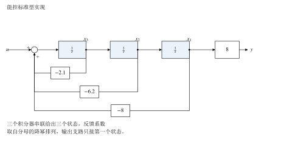
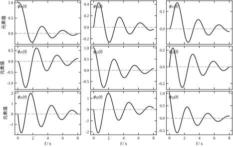
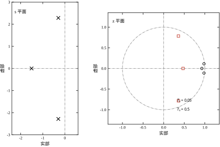
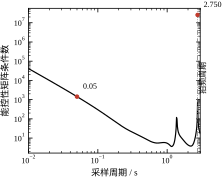
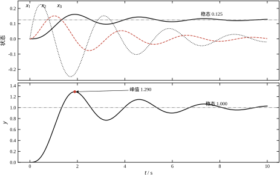

第 2 章把整个回路压缩成一个分式 T(s)。只要系统是线性定常、单输入单输出、初始条件为零，这个压缩就无损：给定输入，输出唯一确定。但工程现场遇到的多数问题不满足这三个条件，压缩过程中丢掉的恰好是现场最需要的东西。
第一是初值。 传递函数只描述“从零开始”的响应。一台已经运行了半小时的机组、一个停在半行程的阀门、一块带着残余电荷的电容，它们的初值都不为零。同样一个 G(s)，初值分布不同，输出轨迹就不同；而传递函数对这种差别一无所知。要知道初值怎么影响输出，必须知道“哪些量在存储能量、它们此刻各是多少”，这正是状态的含义。
第二是内部量。 传递函数只给输出 y，不给中间的转速、电流、温度、压力。控制器要限流、要防超温、要做前馈，都需要直接用到这些内部量。单靠 y 反推内部量，就是观测器要做的事；而观测器的设计必须先有一个描述内部量的模型。
第三是多输入多输出。 一个双输入双输出的对象有四个传递函数，写成矩阵也能算，但极点配置、LQR、卡尔曼滤波这些设计方法都不是按“四个分式”组织的，而是按“一个矩阵对 (A,B)、一个矩阵对 (A,C)”组织的。用传递函数做多变量设计，等于把结构信息拆散了再拼回去。
状态空间不是“另一种表示法”，而是把这三件事补回来的最小框架。它把 n 阶微分方程拆成 n 个一阶方程，用向量把 n 个变量捆在一起，用矩阵把方程之间的耦合关系一次写完。
沿用第 2 章 §2.5.5 的位置伺服名义模型，把双环闭环折算成一个三阶对象：
G(s)=\frac{8}{s^{3}+2.1s^{2}+6.2s+8} \tag{3-1}
它的极点是 -1.5075 与 -0.2963\pm2.2845\mathrm{j}，直流增益为 1.000。一对弱阻尼复极点意味着阶跃响应会明显过冲：脚本算出的峰值是 1.2897，出现在 t=1.8885 s，超调 28.97\%，之后经过约 8 s 才回到 1.000 附近。这些数字只描述输出，不描述内部。
仅凭这个峰值，说得出“内部谁在动”吗？说不出来。等本章把状态实现写出来之后，同一件事会多出一个解释：输出峰值意味着 x_1 取极大值，而由 \dot x_1=x_2 可知，峰值时刻 x_2 恰好为零——输出冲到最高点时，内部速度正好过零，此后开始回退。28.97\% 这个数在传递函数视图里只是一个标量指标，在状态空间里却对应着一个“速度为零、位移超出稳态 29\%”的内部状态。同一个现象，两种描述的信息量不同，这就是本章要建立状态空间的原因。
现在把它写成状态方程。取三个状态 x_1、x_2、x_3，令
A=\begin{bmatrix} 0 & 1 & 0\\ 0 & 0 & 1\\ -8 & -6.2 & -2.1 \end{bmatrix},\qquad B=\begin{bmatrix}0\\0\\1\end{bmatrix},\qquad C=\begin{bmatrix}8 & 0 & 0\end{bmatrix},\qquad D=0 \tag{3-2}
则 \dot{\boldsymbol{x}}=A\boldsymbol{x}+Bu、y=C\boldsymbol{x} 与式 (3-1) 给出同一个输入输出关系。这一点可以用两种方式核对：把 C(sI-A)^{-1}B 展开，得到 8/(s^3+2.1s^2+6.2s+8)；或者用脚本在 200 个频率点上比较状态实现与传递函数的取值，最大相对偏差 1.06\times10^{-15}，属于双精度舍入。
值得停下来看一眼这三个状态是什么。A 的前两行说明 \dot x_1=x_2、\dot x_2=x_3，所以 x_2 是 x_1 的导数，x_3 是 x_1 的二阶导数；C=[8,0,0] 说明输出只取 x_1 的 8 倍，于是 x_1=y/8。它们是“位置、速度、加速度”再乘一个常数因子，量纲并不统一。这不是错误，而是状态变量的选取本来就不唯一：只要三个量能唯一确定系统的未来演化，任何一组都可以当状态。第 3.2.4 节会给出严格的等价关系，并说明为什么工程上仍然偏好有物理意义的那一组。
把式 (3-2) 与式 (3-1) 并排看，多出来的信息可以归成四类。
初值可以指定。 给定 \boldsymbol{x}(0)，零输入响应 \boldsymbol{x}(t)=e^{At}\boldsymbol{x}(0) 完全确定。第 3.6 节用这个式子做了数值验证：初值放在第一个状态上，解析解与数值积分在 81 个时刻上的最大偏差是 1.89\times10^{-12}。
内部量可以约束。 限流是 |x_2|\le I_{\max}，限加速度是 |x_3|\le a_{\max}，这些约束直接写在状态上，不用再从输出反推。
多变量可以统一。 B 变成 n\times m，C 变成 p\times n，方程形式不变。第 54 章的极点配置、第 55 章的 LQR、第 56 章的卡尔曼滤波都在这个形式下写。
数值性质可以比较。 同一个传递函数有无穷多种状态实现，它们的特征值相同、传递函数相同，但能控性矩阵的条件数可能差一个数量级。第 3.5.3 节会给出具体数字：同一组极点，写成多项式系数时受 10^{-6} 的相对扰动会产生 6.5\times10^{-4} 的极点位移，写成对角矩阵时同样量级的扰动只产生 4.0\times10^{-6} 的位移。
本章的一句话核心是：把 n 阶方程拆成 n 个一阶方程，用矩阵一次写完；解的结构由矩阵指数决定，系统的性质由 (A,B,C) 的秩与谱决定。
路线如下。§3.2 定义状态、状态方程与输出方程，给出连续与离散两种形式，并从传递函数构造能控标准型；§3.3 推导状态解、状态转移矩阵与传递函数的互化，给出能控性与能观性的判据和三种标准型；§3.4 处理零阶保持离散化、极点映射与采样周期对能控性的影响；§3.5 讨论状态从哪里来、什么时候必须用状态空间、以及五条适用边界；§3.6 用解析解、数值积分、离散迭代三条独立路径互证；§3.7 收束成十条常见错误与十问自测。
需要提前说明的是，本章只处理有限维、线性定常、集中参数系统。分布参数系统（第 74 章）、时变系统（第 23 章）、非线性系统（第 60 章）都会打破“A 是常数矩阵”这个前提，届时状态空间的形式仍在，但矩阵指数的闭式解不再成立。这条边界在 §3.5.4 展开。
状态是能完整描述系统“此刻处境”的最小一组变量。严格地说：存在一个时刻 t_0，只要知道这组变量在 t_0 的取值，再加上 t\ge t_0 的全部输入，就能唯一确定系统在 t\ge t_0 的全部行为，这组变量就构成状态。
定义里有两个词需要强调。“完整”意味着不遗漏：漏掉一个储能元件的能量，未来的演化就定不下来。“最小”意味着不冗余：多放一个可以由其余变量算出来的量，不增加信息，只增加矩阵维数和计算量。工程上常见的错误是“把所有能测的量都塞进状态”，结果状态维数远大于系统阶次，能控性矩阵直接奇异——不是物理上不能控，而是模型里带了冗余。
状态变量是这组变量中的每一个，状态向量是把它们按顺序排成的列向量 \boldsymbol{x}(t)\in\mathbb{R}^n。n 称为系统的阶，对集中参数线性系统，它等于传递函数分母的阶次，也等于独立储能元件的个数。
“最小”这一条在实际建模时不好判断，可以用三条操作判据逐条筛。判据一，能否被其余变量代数表出。 两个弹簧串联、中间有一个质量块，若两端位置已知，中间位置可由弹簧变形关系算出，那它就不是独立状态；只有当中间质量块有自己的惯性、其位置不能由两端瞬时确定时，才需要单列一个状态。判据二，是否只差单位换算。 摄氏温度与开氏温度、转速的 rad/s 与 r/min，只差一个常数倍，同时放进状态只会让 A 出现一对线性相关的列，条件数变差。判据三，是否只出现在输出方程里。 一个量若只由其他状态代数组合而成、不出现在任何状态导数中，它是输出的函数，不是状态。
三条都过之后，还有一道数值检查：把候选状态写进 A，算一遍能控性矩阵的秩。若秩小于维数，要么有冗余（某两列线性相关），要么有真正不能控的模态；两者要靠物理分析区分，不能只看秩的数值。
线性定常系统的标准形式是
\begin{cases} \dot{\boldsymbol{x}}(t)=A\boldsymbol{x}(t)+B\boldsymbol{u}(t)\\[2pt] \boldsymbol{y}(t)=C\boldsymbol{x}(t)+D\boldsymbol{u}(t) \end{cases} \tag{3-3}
其中 A\in\mathbb{R}^{n\times n} 是系统矩阵，B\in\mathbb{R}^{n\times m} 是输入矩阵，C\in\mathbb{R}^{p\times n} 是输出矩阵，D\in\mathbb{R}^{p\times m} 是直通矩阵。第一式叫状态方程，描述状态怎么随时间演化；第二式叫输出方程，描述输出怎么由状态和输入组合出来。
D 常被忽略，但它的物理意义不能含糊。D\ne0 表示输入到输出之间存在一条不经过任何储能元件的通路：电阻分压、理想传感器的直通、电流环里电压到电流的瞬时比例关系，都属于这一类。反过来，若 D=0，传递函数是严格真有理分式，输入阶跃在输出上不会产生跳变。本章的对象 D=0，符合“位置不会瞬移”的直觉。
维度上有一个容易记混的地方：B 的列数等于输入个数，C 的行数等于输出个数，A 永远是方阵。单输入单输出时 B 是列向量、C 是行向量，D 是标量；此时 C(sI-A)^{-1}B 是一个标量分式，与第 1 章的传递函数一致。
给定严格真有理的传递函数
G(s)=\frac{b_1s^{n-1}+b_2s^{n-2}+\cdots+b_n}{s^{n}+a_1s^{n-1}+\cdots+a_n} \tag{3-4}
一种直接的实现是能控标准型：
A_c=\begin{bmatrix} 0 & 1 & & \\ & \ddots & \ddots & \\ & & 0 & 1\\ -a_n & -a_{n-1} & \cdots & -a_1 \end{bmatrix},\quad B_c=\begin{bmatrix}0\\ \vdots\\ 0\\ 1\end{bmatrix},\quad C_c=\begin{bmatrix}b_n & b_{n-1} & \cdots & b_1\end{bmatrix} \tag{3-5}
A_c 的最后一行的元素是分母系数的反序取负，C_c 的元素是分子系数的反序。对本章对象，n=3、a_1=2.1、a_2=6.2、a_3=8、b_3=8、b_1=b_2=0，代进去正好得到式 (3-2)。
这个构造之所以成立，可以看 (sI-A_c) 的结构：第一行给出 sX_1-X_2，第二行给出 sX_2-X_3，逐行回代就把 X_2、X_3 都用 X_1 表示；最后一行再把分母系数带回来，整理即得
C_c(sI-A_c)^{-1}B_c=\frac{b_1s^{n-1}+\cdots+b_n}{s^n+a_1s^{n-1}+\cdots+a_n} \tag{3-6}
不需要背这个恒等式，记住两条对应关系即可：分母系数进 A 的最后一行，分子系数进 C。分子阶次低于分母时 D=0；两者同阶时先做多项式除法，把商放进 D，余项再按上式实现。
举一个非严格真的例子。取
G(s)=2+\frac{8}{s^{3}+2.1s^{2}+6.2s+8} =\frac{2s^{3}+4.2s^{2}+12.4s+24}{s^{3}+2.1s^{2}+6.2s+8}
分子分母同阶，先做除法：商是 2，余项是 8。于是 D=2，A、B 与式 (3-5) 相同，C=[8,0,0]。物理上这条 D=2 的支路就是 §3.2.2 说的直通通路：输入一变化，输出立刻跳 2 倍，不等待任何储能元件响应。若漏掉 D，阶跃响应会少一个瞬时跳变，稳态值也会差 2，而这个错误在只比较极点时完全看不出来。
同一个传递函数有无穷多种状态实现。若 \boldsymbol{x}=T\boldsymbol{z}，T 为非奇异矩阵，代入式 (3-3) 得
A_z=T^{-1}AT,\qquad B_z=T^{-1}B,\qquad C_z=CT,\qquad D_z=D \tag{3-7}
这组变换叫相似变换，A_z 与 A 互为相似矩阵。相似变换保持的特征值、传递函数、能控性秩、能观性秩和麦克米伦阶，都是系统的固有属性；改变的是矩阵元素的数值、矩阵的条件数，以及每个状态分量的物理含义。
以 §3.1.2 的式 (3-2) 为例，取 T=\mathrm{diag}(1/8,1/8,1/8)，等价于令 x_1=y，得到
B_p=\begin{bmatrix}0\\0\\8\end{bmatrix},\qquad C_p=\begin{bmatrix}1&0&0\end{bmatrix} \tag{3-8}
A 不变。此时三个状态分别是位置、速度、加速度，量纲清楚，限幅和初值都能直接对应到物理量。两个实现的特征值都是 -1.5075 与 -0.2963\pm2.2845\mathrm{j}，传递函数都是式 (3-1)，脚本在三个频率点上比较的相对偏差不超过 3.3\times10^{-14}。
选择哪一组状态，取决于要回答什么问题。做控制器设计，能控标准型让极点配置的公式最简洁；做物理建模和状态约束，物理实现最直观；做数值计算，正交变换（如把 A 变成实 Schur 形）条件数最好。三者描述的是同一个系统，不存在“正确”的状态，只存在“适合当前任务”的状态。
需要提醒的是，相似变换不改变特征值，但会改变能控性矩阵的条件数。脚本用 5 个随机生成的 T 做了试验，能控性条件数在 19.31 到 176.63 之间变化，而极点偏差始终不超过 3.6\times10^{-14}。同一个系统，换一组状态，数值上可能从“很好算”变成“勉强能算”。这一点在 §3.5.3 会用更极端的例子展开。
采样系统在采样时刻的模型写成
\begin{cases} \boldsymbol{x}[k+1]=A_d\boldsymbol{x}[k]+B_d\boldsymbol{u}[k]\\[2pt] \boldsymbol{y}[k]=C_d\boldsymbol{x}[k]+D_d\boldsymbol{u}[k] \end{cases} \tag{3-9}
形式与连续时间完全平行，只是导数换成了差分。这里先只给形式，A_d、B_d 怎么从 (A,B) 算出来，留到 §3.4；需要提前记住的是：离散状态只在采样时刻有定义，采样之间的行为由保持器的类型决定，A_d 的数值依赖采样周期 T_s，不是连续矩阵的简单复制。
C_d 与 D_d 通常与连续情形相同（采样瞬间没有动态），所以离散化的核心是 (A,B)\to(A_d,B_d)。这一步做错，后面所有离散设计都会偏，而偏的方式往往很隐蔽：极点位置看起来差不多，闭环响应却对不上。
式 (3-2) 可以直接画成图 3-1。三个积分器串联，对应三个状态；每个状态的输出经一个系数送回入口求和点，系数就是 A 的最后一行的三个元素；输出支路只接第一个状态，增益为 8。

读这张图有三个要点。积分器的个数等于状态维数，也等于分母的阶次，看到几个积分器就知道系统是几阶。反馈系数就是分母系数的反序取负，图上标 -2.1、-6.2、-8，与 A 的最后一行一一对应。前向支路的增益就是分子的系数，这里只有一个 8，所以分子是常数。
这张图与第 2 章的方块图是同一套语言：方块、信号线、求和点、引出点。区别在于，状态空间图里的每个积分器都对应一个独立的一阶方程，信号的物理含义由状态定义决定，而不是由方块名称决定。把这张图与 §3.1.2 的物理实现放在一起看，会发现两者的拓扑完全相同，只是三个反馈系数和输出增益的分配方式不同——这正是相似变换在图上留下的痕迹。
上面读的是能控标准型这种特殊形式。一般形式的 (A,B,C,D) 怎么画？ 规则只有三条，与具体数值无关。
第一，画 n 个积分器，第 i 个积分器的输出就是 x_i，它的初值入口标 x_i(0)。第二，第 i 个积分器的输入端是一个求和点，把 A 的第 i 行的每个元素 a_{ij} 从 x_j 引出接进来，再把 B 的第 i 行的每个元素 b_{il} 从 u_l 引出接进来。第三，第 i 个输出从各状态经 C 的第 i 行引出求和，若 D 的第 i 行不全为零，还要从输入直接引一条不经过积分器的支路。
按这三条画，一般系统会出现 n^2 条交叉支路，图会密得看不清。能控标准型之所以好用，正是因为它把 A 的绝大多数元素做成零，只留最后一行，于是 n^2 条支路缩成 n 条。规范型的价值一半在代数上，一半在图上：连线越少，越容易看出哪个状态影响哪个状态。这也是第 7 章要讲稀疏性与结构的原因。
标量方程 \dot x=ax 的解是 x(t)=e^{at}x_0。矩阵情形照搬这个形式，把 e^{at} 换成矩阵指数：
e^{At}=I+At+\frac{1}{2!}A^{2}t^{2}+\frac{1}{3!}A^{3}t^{3}+\cdots =\sum_{k=0}^{\infty}\frac{A^{k}t^{k}}{k!} \tag{3-10}
这个级数对任意 t 绝对收敛，因为 \|A^k\|\le\|A\|^k，而标量级数 \sum\|A\|^kt^k/k!=e^{\|A\|t} 收敛。收敛性保证了定义合法，也给出了一个朴素的算法：取足够多项截断。对本章对象，t=1 s 时取 40 项，与 Padé 算法的结果相差 1.55\times10^{-15}，已经到双精度极限。
非齐次方程的解由常数变易法得到：
\boldsymbol{x}(t)=e^{At}\boldsymbol{x}_0+\int_0^{t}e^{A(t-\tau)}B\boldsymbol{u}(\tau)\,\mathrm{d}\tau \tag{3-11}
两项的含义很清楚：第一项是初值自己演化出来的零输入响应，第二项是输入在 [0,t] 内不断“注入”、再各自演化到 t 的叠加，叫零状态响应。对式 (3-11) 求导可以直接验证：第一项求导得 Ae^{At}x_0，第二项用莱布尼茨公式得 B u(t)+\int_0^t Ae^{A(t-\tau)}Bu(\tau)d\tau，两项相加正好等于 Ax+Bu。
输入为常值时，式 (3-11) 可以积出闭式：
\boldsymbol{x}(t)=e^{At}\boldsymbol{x}_0+A^{-1}\left(e^{At}-I\right)B\,u \tag{3-12}
前提是 A 可逆。A 奇异意味着系统有位于原点的极点，此时稳态不存在或需要单独处理，式 (3-12) 不能直接用。本章对象的 A 非奇异（极点都不在原点），可以直接用。
把 e^{At} 单独记作 \Phi(t)，称为状态转移矩阵。它把状态从 0 时刻“搬运”到 t 时刻，名字由此而来。它有五条基本性质：
\Phi(0)=I,\qquad \Phi(t_1+t_2)=\Phi(t_1)\Phi(t_2),\qquad \Phi^{-1}(t)=\Phi(-t),\qquad \frac{\mathrm{d}\Phi}{\mathrm{d}t}=A\Phi=\Phi A \tag{3-13}
前三条说明 \{\Phi(t):t\in\mathbb{R}\} 构成一个单参数群：单位元是 I，逆元是 \Phi(-t)，乘法满足半群律。第四条说明 \Phi 与 A 可交换，这一点在化简矩阵表达式时经常用到。
四条里最容易被低估的是 \Phi^{-1}(t)=\Phi(-t)。它说明线性定常系统在时间上是可逆的：知道 t 时刻的状态，可以倒推出 0 时刻的状态，只要没有奇异。这条性质是能观性的数学基础——观测器之所以可能，本质上就是因为状态的演化可以被“倒着算”。反过来，一般的非线性系统不保证这一条：不同的历史可能到达同一个状态，滞环与不可逆耗散会让“倒推”失去唯一解，所以它们的能观性要弱得多。至于 \Phi 与 A 可交换，用处在于化简：凡是同时出现 \Phi(t) 与 A 的表达式，可以自由换序，式 (3-16) 的推导就依赖这一点。
半群性质有直接的工程含义：先演化 t_1 再演化 t_2，等于一次演化 t_1+t_2。它也是数值校验的好工具——把两个时刻的矩阵指数相乘，与直接算总时刻的矩阵指数比较，脚本给出的残差是 4.00\times10^{-15}。如果哪个库的矩阵指数实现有问题，这条性质通常第一个暴露。
图 3-2 把 \Phi(t) 的九个元素画在同一张图上。可以看到三个特征：对角元素最终都趋于零（稳定系统），非对角元素出现明显的振荡（复极点），所有曲线的包络按 e^{-0.2963t} 衰减（主导极点）。

t=1 s 时，\Phi(1) 的第一列是 [0.384786,\ -1.204032,\ -0.153332]^{\mathrm{T}}。这个向量的物理意义是：只在第一个状态上放单位初值，1 s 后三个状态各是多少。注意第二个分量是负的——初值在 x_1 上，x_2 先被“拉”成正的，随后被复极点的振荡带回负值。这种内部的反向运动，从输出曲线上看不出来，只有状态空间能显示。
式 (3-11) 的两项可以分开研究，也可以叠加，这正是线性系统最重要的性质。
零输入响应只由初值决定：
\boldsymbol{x}_{\mathrm{zi}}(t)=\Phi(t)\boldsymbol{x}_0 \tag{3-14}
它衡量“系统自己会怎么走”。稳定性、衰减速率、振荡频率都由 \Phi(t) 决定，与输入无关。初值放在不同状态上，走出的轨迹不同，但都落在同一组模态的线性组合里。
零状态响应只由输入决定：
\boldsymbol{x}_{\mathrm{zs}}(t)=\int_0^{t}\Phi(t-\tau)B\boldsymbol{u}(\tau)\,\mathrm{d}\tau \tag{3-15}
它是输入与脉冲响应的卷积。对单输入系统，\Phi(t)B 就是“在 t=0 打一个单位脉冲、初值为零”时状态的反应，C\Phi(t)B 就是输出的脉冲响应——这与第 1 章的卷积定理完全一致。
两项叠加就是全响应。工程上区分这两项有实际用处：调试时先看零输入响应判断模型对不对（断开输入、给一个已知初值、看它怎么衰减），再看零状态响应判断增益和相位对不对（零初值、给阶跃、看稳态和超调）。两件事混在一起看，出了问题很难定位。
用一阶系统把这两项算一遍，比看公式直观。取 \dot x=-2x+3u、x(0)=1、u(t)=1，则 \Phi(t)=e^{-2t}，零输入响应是 e^{-2t}，零状态响应是
\int_0^t e^{-2(t-\tau)}\cdot3\,\mathrm{d}\tau=\frac{3}{2}\left(1-e^{-2t}\right)
全响应为 1.5-0.5e^{-2t}。三个检查点：t=0 时等于 1，与初值吻合；t\to\infty 时趋于 1.5，与稳态 3/2 吻合；t=1/(2) s 即一个时间常数时等于 1.5-0.5\times0.3679=1.316，位于初值与终值之间约 63\% 处。两条响应各自满足自己那部分的边界条件，叠加后才同时满足初值与终值——若只满足一个，说明有一项算错了。
对式 (3-3) 做拉普拉斯变换，令初值为零：
s\boldsymbol{X}(s)=A\boldsymbol{X}(s)+B\boldsymbol{U}(s) \ \Longrightarrow\ \boldsymbol{X}(s)=(sI-A)^{-1}B\boldsymbol{U}(s) \tag{3-16}
代入输出方程得
G(s)=C(sI-A)^{-1}B+D \tag{3-17}
这是状态空间与传递函数之间的桥。矩阵求逆可以写成
(sI-A)^{-1}=\frac{\operatorname{adj}(sI-A)}{\det(sI-A)} \tag{3-18}
分母是特征多项式，分子是伴随矩阵。于是传递函数的极点就是 A 的特征值，一个不多一个不少；前提是分子分母没有公因子，也就是没有极零相消。这一点与第 2 章的结论接得上：梅森公式的分母 \Delta(s) 就是闭环系统的特征多项式，而在状态空间里它就是 \det(sI-A)。
脚本对三种实现分别计算特征多项式，与分母 s^3+2.1s^2+6.2s+8 的最大偏差都是 3.55\times10^{-15}。三种实现的矩阵元素完全不同，特征多项式却一致到舍入量级，这是相似变换不变性的直接证据。
式 (3-17) 还有一个常被忽略的用途：判断 D 是否为零。若 C(sI-A)^{-1}B 的分子阶次等于分母阶次，说明存在直通项，D 就是那个商。只做多项式长除法容易漏掉符号，用状态空间算一遍可以互相核对。
能控性回答的问题是：能不能用输入把状态搬到任意想去的地方。严格定义是：若存在有限时间 t_1 和分段连续输入 \boldsymbol{u}(t)，能把任意初态 \boldsymbol{x}(0) 转移到任意终态 \boldsymbol{x}(t_1)，则称系统状态完全能控。
对线性定常系统，这个定义等价于一个秩条件：
\mathcal{C}=\begin{bmatrix}B & AB & A^{2}B & \cdots & A^{n-1}B\end{bmatrix},\qquad \operatorname{rank}\mathcal{C}=n \tag{3-19}
矩阵 \mathcal{C} 叫能控性矩阵，它有 n 行、nm 列。单输入时是 n\times n 方阵，满秩等价于行列式非零。本章对象的能控性矩阵行列式为 1（这正是能控标准型的特点），条件数 22.370。
秩条件只回答“能不能”，不回答“好不好控”。一个系统可能满秩，但某个方向的增益极小，实际输入功率稍有限制就搬不动。工程上更该看的是最小奇异值或条件数。脚本用 PBH 判据算出的最小奇异值是 0.183，说明三个方向都还有余量，但已经不是数量级上的宽裕。
PBH 判据是秩条件的逐点版本：
\operatorname{rank}\begin{bmatrix}\lambda I-A & B\end{bmatrix}=n,\qquad \forall\lambda\in\sigma(A) \tag{3-20}
它的好处是不用构造 A 的幂次，数值上更稳，而且能直接指出“哪个模态不能控”。若某个特征值 \lambda_i 使上式降秩，说明该模态的激励被 B 的方向“错过”了，无论输入多大都动不了它。
秩条件还有一个几何读法，比背公式好记。\mathcal{C} 由 n 块 A^{j}B 拼成，第 j 块是“输入经过 j 次系统演化后所指的方向”。能控就是这些方向张满整个 \mathbb{R}^n。输入通常只有少数几个通道，B 的列数远小于 n，所以一开始方向很少；靠 A 反复作用把它们“转”开，才可能撑满。一旦这些方向只落在某个真子空间里，那个子空间就是 A 的不变子空间，状态一旦进去就再也出不来。“秩为 n”翻译成人话，就是“B 的方向在 A 的作用下能转遍整个空间”。
一个简单反例可以说明秩条件的必要性。取
A=\begin{bmatrix}0&1&0\\0&0&0\\0&0&-2\end{bmatrix},\qquad B=\begin{bmatrix}0\\1\\0\end{bmatrix},\qquad C=\begin{bmatrix}1&0&1\end{bmatrix} \tag{3-21}
特征值是 0,0,-2。能控性矩阵的秩只有 2，因为第三个状态 x_3 的方程是 \dot x_3=-2x_3，输入根本不进入；它对应的模态不能控。能观性矩阵的秩是 3，三个状态都能从输出看到。这个例子同时说明：能控与能观是两个独立的问题，一个成立不蕴含另一个。
能观性回答的是反问题：能不能从输出反推出状态。严格定义是：对任意初态 \boldsymbol{x}(0)，都存在有限时间 t_1，使得在 [0,t_1] 内观测到的 \boldsymbol{y}(t) 能唯一确定 \boldsymbol{x}(0)。
判据与能控性对偶：
\mathcal{O}=\begin{bmatrix}C\\ CA\\ \vdots\\ CA^{n-1}\end{bmatrix},\qquad \operatorname{rank}\mathcal{O}=n \tag{3-22}
PBH 形式是
\operatorname{rank}\begin{bmatrix}\lambda I-A\\ C\end{bmatrix}=n,\qquad \forall\lambda\in\sigma(A) \tag{3-23}
能观性矩阵为什么恰好取到 C 的 n-1 次幂？把输出在 t=0 附近按泰勒展开：y(0)=C\boldsymbol{x}_0、\dot y(0)=CA\boldsymbol{x}_0、\ddot y(0)=CA^2\boldsymbol{x}_0，依此类推。前 n 个系数给出 n 个线性方程，未知量是 \boldsymbol{x}_0 的 n 个分量，恰好可解。再往高阶取没有新信息，因为由 Cayley–Hamilton 定理，A^n 可以写成 I,A,\dots,A^{n-1} 的线性组合，CA^n 必然被前面几行表示。所以 n 是必需的，也是充分的——多一阶浪费，少一阶不够。 这与能控性矩阵取到 A^{n-1}B 是同一个道理，只是转置关系。
本章对象的能观性矩阵秩为 3，条件数 1.000——这是能观标准型的特征，条件数恰好为 1，数值上最“干净”。PBH 最小奇异值 0.576，比能控性的 0.183 宽裕。
对偶关系值得单独记一句：(A,B,C) 能控，等价于 (A^{\mathrm{T}},C^{\mathrm{T}},B^{\mathrm{T}}) 能观。所以能控性的每一条结论，把矩阵转置、把 B 与 C 互换，就得到能观性的对应结论。第 3.3.7 节的能观标准型就是能控标准型的转置，第 54 章的观测器设计也有一半公式可以直接从控制器设计“抄”过来。这不是巧合，而是同一个代数结构在两个方向上的投影。
同一个系统可以写成无穷多种 (A,B,C)，但有三种形式在设计和计算中最常用。
能控标准型已在式 (3-5) 给出。它的优点是极点配置的公式最简洁：若期望特征多项式是 s^n+\alpha_1s^{n-1}+\cdots+\alpha_n，状态反馈增益可以直接读出 k_i=\alpha_i-a_i。缺点是 C 集中在一个元素上，输出对状态的依赖很“偏”。
能观标准型是它的转置对偶：
A_o=A_c^{\mathrm{T}},\qquad B_o=C_c^{\mathrm{T}},\qquad C_o=B_c^{\mathrm{T}} \tag{3-24}
它的能观性矩阵是单位阵的某种排列，条件数为 1，观测器设计时最方便。
模态型以特征向量为基：
A_m=\Lambda=\operatorname{diag}(\lambda_1,\dots,\lambda_n),\qquad B_m=V^{-1}B,\qquad C_m=CV \tag{3-25}
其中 V 是特征向量矩阵，A V=V\Lambda。模态型把系统拆成 n 个互不耦合的一阶方程，每个状态对应一个模态，衰减速率和振荡频率一目了然。缺点是要求 A 可对角化；有重极点时只能用 Jordan 型，而 Jordan 型对扰动极其敏感（§3.5.3 会给出数字）。
复极点会让式 (3-25) 出现复数矩阵。实系统通常改用 2\times2 实块：
\begin{bmatrix}\sigma & \omega\\ -\omega & \sigma\end{bmatrix} \quad\text{对应}\quad \lambda=\sigma\pm\mathrm{j}\omega \tag{3-26}
本章对象有一对复极点 -0.2963\pm2.2845\mathrm{j}，模态型里就出现这样一个块，\sigma=-0.2963、\omega=2.2845。脚本用模态型算传递函数，与式 (3-1) 的最大相对偏差是 4.37\times10^{-15}；直流增益的虚部只有 1.69\times10^{-17}，说明复共轭配对是正确的。
三种标准型之间只差一个相似变换。选哪一种，取决于下一步要做什么：配极点用能控型，设计观测器用能观型，分析模态用模态型，做数值计算用正交变换。形式服务于任务，不服务于美观。
式 (3-17) 的分母是 n 阶，但传递函数的实际阶次可能更低。原因是分子分母可能有公因子，而公因子对应的是既不能控又不能观的模态。
设 A=\operatorname{diag}(-1,-2)、B=[1,0]^{\mathrm{T}}、C=[1,0]，则
G(s)=C(sI-A)^{-1}B=\frac{1}{s+1} \tag{3-27}
分母是二阶，传递函数却是一阶。第二个状态 x_2 满足 \dot x_2=-2x_2，输入进不去（不能控），输出也看不到（不能观），它在传递函数里被彻底消掉了。这个模态在物理上仍然存在——它可能是一个未接传感器的内部自由度——但它不影响输入输出关系。
状态维数 n 与传递函数阶次之差，就是“藏在内部”的模态个数。去掉所有不能控和不能观模态后剩下的阶次，叫最小实现阶次，也叫麦克米伦阶。第 2 章说过 \Delta 的阶次等于麦克米伦阶而不是回路数，原因就在这里：回路数决定的是图的复杂度，最小实现阶次决定的是真正的动态阶数。
工程上这个区别很重要。若一个被控对象名义上是 6 阶，辨识出来的传递函数只有 4 阶，不要急着认为“模型降阶成功”——很可能是两个模态既激励不到也测不到。它们在正常运行时确实不影响输出，但一旦工况变化让它们变得能控或能观，模型就会突然“多出”两个极点，闭环行为随之改变。第 51 章的能控性能观性分解会把这个结构写得更清楚。
检测极零相消不能只靠眼睛看分子分母。数值上，把分子分母各自求根再比较，接近但不相同的零极点很容易被误判为对消，尤其在系数条件数大的时候。可靠的做法是在状态空间里做能控性分解与能观性分解：把 A 变换到能控子空间与不能控子空间的直和，再对能控部分做能观分解，剩下的最小子系统就是真实阶次。这条路径不依赖多项式求根，对系数扰动不敏感，代价是要做两次特征空间分解。
数字控制器在每个采样周期内把控制量保持不变，这就是零阶保持器（ZOH）。在 [kT_s,(k+1)T_s) 内 \boldsymbol{u}(t)=\boldsymbol{u}[k]，代入式 (3-11) 并令 t=(k+1)T_s、初值为 \boldsymbol{x}[k]，得
\boldsymbol{x}[k+1]=e^{AT_s}\boldsymbol{x}[k] +\left(\int_0^{T_s}e^{A\tau}B\,\mathrm{d}\tau\right)\boldsymbol{u}[k] \tag{3-28}
于是
A_d=e^{AT_s},\qquad B_d=\int_0^{T_s}e^{A\tau}B\,\mathrm{d}\tau \tag{3-29}
C_d=C、D_d=D 保持不变，因为采样瞬间没有动态。注意 B_d 不是 BT_s，也不是 A^{-1}(A_d-I)B 的近似——对可逆的 A，后者恰好是精确值；对不可逆的 A，积分仍然有定义，而那个表达式没有。这一点在含积分器的对象上经常被写错。
工程上不单独算积分，而是把 (A,B) 拼成增广矩阵，做一次矩阵指数：
\exp\left(\begin{bmatrix}A & B\\ 0 & 0\end{bmatrix}T_s\right) =\begin{bmatrix}A_d & B_d\\ 0 & I\end{bmatrix} \tag{3-30}
这个恒等式的证明只需把左侧按分块展开，利用 e^{0}=I 和 \int_0^{T_s}e^{A\tau}B\,d\tau 的定义。它的价值在于：一次 expm 调用同时得到 A_d 与 B_d，两者严格配套。分开算时，若 A_d 用近似、B_d 用另一个近似，采样点响应就会出现系统性偏差。
B_d 还有一条闭式，只在 A 可逆时成立：把 \int_0^{T_s}e^{A\tau}\,\mathrm{d}\tau 积出来，得 A^{-1}(e^{AT_s}-I)=A^{-1}(A_d-I)，于是 B_d=A^{-1}(A_d-I)B。手算时这条式子很方便，但它对 A 奇异完全失效——§3.5.5 的电机模型 A 有一个零特征值，正属于此类。所以工程代码里一律用式 (3-30) 的增广矩阵，不用闭式，避免“模型改了、公式突然不能用”的陷阱。
脚本用式 (3-30) 算出的 A_d、B_d 与 control.c2d 的结果逐元素相同（偏差 0.00\times10^{0}），与连续解的采样点响应相差 8.74\times10^{-16}。T_s=0.05 s 时离散极点是 0.927396 与 0.978876\pm0.112302\mathrm{j}；T_s=0.5 s 时变成 0.470599 与 0.358329\pm0.784348\mathrm{j}。同一个连续系统，采样周期一变，离散极点就整体向原点移动——这不是数值误差，而是 z=e^{\lambda T_s} 的必然结果。
离散系统的直流增益应当与连续系统相同。脚本在 z=1 处算得 1.000000000，与连续系统的 G(0)=1 相差 1.17\times10^{-12}。这条检查很便宜，却能抓到大部分离散化错误：若 B_d 漏了某个因子，直流增益立刻偏离 1。
需要澄清一个常见误解：G_d(e^{sT_s}) 并不等于 G(s)。脚本在 s=0.3+0.8\mathrm{j} 处比较，相对偏差 2.13\times10^{-2}，即 2% 量级。这不是算错，而是零阶保持器本身的特性：它在采样点之间把信号“冻住”，相当于在频域上乘了一个 \mathrm{sinc} 形状的因子，还引入了高频混叠。第 5 章讨论脉冲传递函数时会把这个偏差的来源拆开；本章只需记住，ZOH 保证的是采样点响应一致，不是频域逐点相等。
递推式 (3-28) 展开 k 步，得
\boldsymbol{x}[k]=A_d^{k}\boldsymbol{x}[0] +\sum_{j=0}^{k-1}A_d^{k-1-j}B_d\,\boldsymbol{u}[j] \tag{3-31}
结构与连续情形完全平行：第一项是初值的幂次演化，第二项是各时刻输入经不同幂次“搬运”后的叠加。连续时间里的 e^{A(t-\tau)} 在离散时间里变成 A_d^{k-1-j}，积分变成求和。
A_d^k 不必真去连乘 k 次。k 很大时用快速幂，O(\log k) 次矩阵乘法；若只关心稳态，可以解 Lyapunov 方程；若要批量算多个 k，先做特征分解再逐点取幂更快。脚本用 80 步直接迭代，与连续解析解在采样点上的最大偏差是 8.74\times10^{-16}，说明式 (3-28) 的离散化与式 (3-31) 的展开是自洽的。
矩阵幂与矩阵指数也应当自洽：A_d^{80} 应该等于 e^{4A}。脚本算得两者最大偏差 3.61\times10^{-15}，仍在机器精度附近。这个结果值得解释一下，因为它看起来“太好了”——80 次矩阵乘法，每次都有舍入，为什么没有累积成 10^{-12}？原因是稳定性：A_d 的谱半径是 0.9789，80 次方后整体衰减到 0.18 量级，舍入误差的绝对量也跟着缩小。对稳定系统，重复乘法的误差不会失控；对不稳定系统则相反，谱半径大于一，舍入误差会被同样放大，迭代几百步后有效数字可能全部丢光。所以“反复乘”能否用，先看系统稳不稳定，不能一概而论。
顺带留下一个对照数字：同样在 T_s=0.05 s，逐元素取指数与矩阵指数的最大偏差是 1.05，量级与矩阵元素本身相当。这不是“精度差”，而是两条完全不同的计算。
这里有一个容易被忽略的细节：离散状态只在采样时刻与连续状态相等。采样点之间，连续系统还在按 e^{At} 演化，而离散模型只给出一个保持值。若控制器在采样间需要状态的估计值，要么用零阶保持（误差最大可达一个采样周期内的变化量），要么用一阶保持或模型预测。这个差别在采样周期较大时非常明显，第 84–86 章讨论数字控制实现时会反复遇到。
连续极点 \lambda 与离散极点 z 的关系由 A_d=e^{AT_s} 直接给出：
z_i=e^{\lambda_i T_s} \tag{3-32}
这条映射把左半平面压进单位圆内，把虚轴卷到单位圆上，把等阻尼线变成对数螺旋。图 3-3 画出本章对象的三个极点在两个采样周期下的像。
“等阻尼线变成对数螺旋”这句话值得展开，因为它是读 z 平面图时最容易搞错的地方。固定阻尼比 \zeta，连续极点是 \lambda=-\zeta\omega_n\pm\mathrm{j}\omega_n\sqrt{1-\zeta^2}，映射后模与角分别是 |z|=e^{-\zeta\omega_nT_s}、\angle z=\omega_nT_s\sqrt{1-\zeta^2}。把 \omega_n 消掉，得到 \ln|z|=-\dfrac{\zeta}{\sqrt{1-\zeta^2}}\angle z，即极坐标下的 r=e^{-k\theta}——这是一条对数螺旋，不是直线。所以在 z 平面上不能用直尺量角度判断阻尼，必须换算回 s 平面，或者查等阻尼螺旋的模板。同理，等自然频率线（s 平面上以原点为圆心、半径 \omega_n 的圆）映射后模长依赖 \zeta，也不再是圆。s 平面上那套“垂直线看衰减、射线看阻尼、圆看频率”的读图口诀，到 z 平面全部失效，只能靠式 (3-32) 逐点换算。

读这张图要注意三件事。第一，稳定性判据换了。 连续域看实部是否小于零，离散域看模是否小于一，两者由式 (3-32) 一一对应，不会出现“连续稳定、离散不稳定”的情况（前提是 ZOH 精确离散化）。第二，采样周期改变像的位置。 T_s=0.05 s 时复极点的像还在 0.98 附近，几乎贴着单位圆；T_s=0.5 s 时已经退到 0.36\pm0.78\mathrm{j}，模降到 0.862。采样越慢，离散系统看起来“越稳定”，但这是假象——它只是把连续动态在采样点上“看漏”了一部分。第三，复极点可能被压成实重根。 当 \omega T_s 接近 2\pi 的整数倍时，一对共轭复极点的像会重合在实轴上，两个模态在采样点上无法区分。
第三点正是下一节要展开的问题：采样周期不仅能改变极点位置，还能改变能控性矩阵的数值性质，甚至在极端情况下让系统结构性地不能控。
把式 (3-29) 代进能控性判据，得到离散系统的能控性矩阵
\mathcal{C}_d=\begin{bmatrix}B_d & A_dB_d & \cdots & A_d^{n-1}B_d\end{bmatrix} \tag{3-33}
结构上它与连续情形一模一样，但数值性质随 T_s 剧烈变化。表 3-1 是脚本对本例的扫描结果。
| T_s / s | 秩 | 能控性条件数 | \lvert z\rvert_{\max} |
|---|---|---|---|
| 0.01 | 3 | 4.11\times10^{4} | 0.997042 |
| 0.05 | 3 | 1.43\times10^{3} | 0.985297 |
| 0.5 | 3 | 8.63 | 0.862323 |
| 2.0 | 3 | 4.37 | 0.552942 |
| 2.7503 | 3 | 1.12\times10^{5} | 0.442737 |
| 3.0 | 3 | 17.29 | 0.411168 |
表 3-1 采样周期对离散能控性条件数的影响（对象见式 (3-1)）
两头都坏，中间好，这是离散能控性的典型形状。
短采样周期端：B_d\approx BT_s，第一列是 O(T_s)；而 A_dB_d=B_d+O(T_s^2)，与 B_d 只差 O(T_s^2)，第二列几乎与第一列平行。三列的张成越来越扁，条件数按 T_s^{-(n-1)}=T_s^{-2} 增长。实测从 T_s=0.01 到 0.05，条件数从 4.11\times10^{4} 降到 1.43\times10^{3}，比值 28.7，接近理论值 5^2=25。这不是“不能控”，而是“数值上快算不动了”——用双精度解这个矩阵的方程，有效数字会损失约 4 位。
长采样周期端：条件数在 T_s=2.7503 s 处冲到 1.12\times10^{5}。这个周期正好是复极点的拍频周期 2\pi/\omega_d=2\pi/2.2845=2.7503 s。此时 \omega_dT_s=2\pi，一对共轭极点的像在单位圆上转了整整一圈、重合到实轴同一点，e^{\lambda T_s}=e^{-0.2963\times2.7503}=0.4427，与表中的 |z|_{\max}=0.442737 一致。两个模态在采样点上变得无法区分，能控性矩阵的两列趋于线性相关。继续加大到 T_s=3.0 s，条件数又回落到 17.29——因为它已经越过了那个“盲点”。
图 3-4 把这条曲线画了出来。横轴是对数刻度，可以看到左端的直线下降（斜率对应 T_s^{-2}）和右端的尖峰。

秩判据在精确算术下是可靠的，在浮点算术下却会骗人。上表所有点的秩都是 3，但 T_s=2.7503 时有效数字已经所剩无几。反过来说，秩真的会掉——只要采样周期取到结构性的盲点。考察 G(s)=1/(s^2+1)，其 A=\begin{bmatrix}0&1\\-1&0\end{bmatrix}、B=[0,1]^{\mathrm{T}}，脚本取几个特殊周期，结果见表 3-2。
| T_s | 秩 | \det\mathcal{C}_d |
|---|---|---|
| 0.5 s | 2 | -0.117 |
| \pi/2 s | 2 | -2.000 |
| \pi s | 1 | -6.11\times10^{-16} |
| 3\pi/2 s | 2 | 2.000 |
| 2\pi s | 0 | 1.01\times10^{-46} |
表 3-2 无阻尼二阶系统在半周期整数倍采样下的能控性
规律很清楚：T_s=k\pi（振荡半周期的整数倍）时行列式为零。k 为奇数时秩降到 1，k 为偶数时 B_d=[1-\cos T_s,\ \sin T_s]^{\mathrm{T}}=0，秩直接降到 0——输入在采样点上完全没有留下痕迹。这就是“采样把系统看瞎了”的极端形态：连续系统完全能控，离散模型却一点都不控。
工程上的取值经验是 T_s\omega_c 落在 0.05 到 0.2 之间，\omega_c 是期望闭环带宽。这个范围同时避开了短周期端的病态和长周期端的盲点。定完 T_s 之后再加一条检查：算一遍 \mathcal{C}_d 的条件数，超过 10^{6} 就该警惕，超过 10^{10} 则任何基于它的极点配置都不可信。
这条经验的两端都有明确的物理依据，不是拍脑袋定的。上端 T_s\omega_c\le0.2 来自相位滞后：零阶保持器在闭环带宽处引入约 \omega_cT_s/2 的相位滞后，T_s\omega_c=0.2 时约 0.1 rad，即 5.7^\circ，还在相位裕度的可接受范围内；到 0.5 就变成 14^\circ，原本 45^\circ 的裕度会被吃掉三分之一。下端 T_s\omega_c\ge0.05 来自数值条件：T_s 再小，\mathcal{C}_d 的列几乎平行，双精度解方程的有效数字掉到十位以下，同时量化误差与控制量计算的舍入占比上升。两端一夹，可用的倍率区间大约只有 4 倍，这也是为什么数字控制器的采样周期在实际工程中往往不是“越快越好”，而是“够快且算得动”。
式 (3-10) 的级数是最直观的算法，但不是最好的。t\|A\| 较大时需要很多项，而且正负项交替会出现抵消，有效数字损失严重。三种常用方法各有适用范围。
级数截断：实现最简单，但所需项数随 \|A\|t 迅速增长。以本章的三阶模型为例，取不同的截断项数与 Padé 结果比较，误差如表 3-3。t=1 s 时 20 项已到 2.35\times10^{-12}，40 项即触到双精度极限 1.55\times10^{-15}；t=4 s 时 20 项的误差是 8.21\times10^{0}，比真值还大，40 项才降到 3.06\times10^{-10}；t=8 s 时 40 项仍然错到 6.29\times10^{2}，必须加到 80 项才回到 4.51\times10^{-9}。
表 3-3 级数截断项数与相对误差
| 截断项数 | t=1 s | t=4 s | t=8 s |
|---|---|---|---|
| 20 | 2.348\times10^{-12} | 8.207\times10^{0} | 1.329\times10^{7} |
| 40 | 1.554\times10^{-15} | 3.056\times10^{-10} | 6.286\times10^{2} |
| 80 | 1.554\times10^{-15} | 3.991\times10^{-13} | 4.505\times10^{-9} |
| 120 | 1.554\times10^{-15} | 3.991\times10^{-13} | 4.505\times10^{-9} |
表中的规律很直白：t 每翻一倍，要维持同样的精度大约要多用一倍多的项，而项数需求随 \|A\|t 近似指数增长。所以固定取 40 项这种写法只在 \|A\|t\lesssim1 时能用；工程代码里一律用库函数，不要手写定长级数。这张表也解释了为什么“分子分母都是双精度、结果却完全错”的情况会出现：级数在 t=4 s 的 20 项截断下并没有数值溢出，每一项都是有限的浮点数，错的是“少截了”，而这种错不会报警。
特征分解：e^{At}=Ve^{\Lambda t}V^{-1}，一次分解、逐点取指数，速度最快。缺点是要求 A 可对角化，且 V 的条件数会放大误差。本章对象用这条路算出的结果与 Padé 相差 2.22\times10^{-15}，看起来很好；但换成 §3.5.3 的 Jordan 块，V 直接奇异，方法失效。
Padé 逼近加缩放平方：先用 A/2^{j} 把范数压到 1 附近，用 [m/m] 阶 Padé 有理式逼近，再平方 j 次还原：
e^{A}\approx\left[R_{mm}\!\left(A/2^{j}\right)\right]^{2^{j}} \tag{3-34}
这是 MATLAB、SciPy、LAPACK 的标准做法。它对可对角化与否不敏感，对范数大小自适应，代价是需要估计 j 和选阶数。工程代码里没有理由自己实现，直接用库函数；但要知道它内部做了什么，否则遇到“矩阵指数算出来是 NaN”时无从下手——那通常是 j 估计不足或矩阵含极大元素。
三条路在 t=1 时的结果彼此相差不超过 2.3\times10^{-15}，说明本例的 A 条件良好、三种方法都可靠。这个一致性不能推广到所有矩阵：方法之间一致，只说明本例没有触发各自的弱点。真正的鲁棒性检验要拿病态矩阵做，见 §3.5.3。
还有一条实用建议：若只需要 e^{At}\boldsymbol{b} 这种“矩阵指数乘向量”的结果，不必先算稠密的 e^{At} 再相乘。对大矩阵，直接用 Krylov 子空间近似可以把 O(n^3) 降到 O(n^2) 量级，精度由子空间维数控制。本章的 3\times3 用不上这个技巧，但第 74 章的分布参数模型会用到。
离散化的核心只有几行，但有几个细节值得固定下来：
def zoh(A, B, Ts):
"""零阶保持离散化：对增广矩阵取一次矩阵指数。"""
n, m = B.shape
M = np.zeros((n + m, n + m))
M[:n, :n] = A
M[:n, n:] = B
E = expm(M * Ts)
return E[:n, :n], E[:n, n:]三点说明。第一，增广矩阵的右下块必须是零矩阵。若误填单位阵，右上块会变成带 e^{\tau} 权重的积分，B_d 直接算错；右下块取零，指数后才得到单位阵，分块结构才干净。第二，expm 必须是矩阵指数，不能用 np.exp 逐元素算——后者对非对角矩阵完全错误，而且错得很隐蔽（对角元素看起来还对）。第三，返回后立刻做两条检查：A_d 的特征值应等于 e^{\lambda T_s}；离散直流增益应等于连续直流增益。两条都过，才说明这一步没写错。
正文 §3.6 会把这个函数与解析解、数值积分放在一起交叉验证。这里先记住一条原则：离散化代码的正确性不能靠“看起来对”，要靠与连续解在采样点上逐点比较。
状态不是从天上掉下来的，工程上有四条来路，各有各的坑。
第一条是物理建模。 用牛顿定律、基尔霍夫定律、能量法把每个储能元件的方程写出来，选独立变量作为状态。这条路得到的 A、B、C 元素有明确物理意义，量纲可查，但容易被“看不见的耦合”漏项：两个弹簧串联时中间质量块的位置、电机与负载之间的联轴器扭矩，都是容易漏掉的状态。漏一个状态，模型的阶次就少一阶，高频段的相位会明显偏。
第二条是辨识。 子空间辨识（第 20 章）直接给出 (A,B,C)，不需要先猜状态是什么。这条路得到的 A 通常是“黑箱”形式，元素没有物理意义，但阶次和输入输出关系是数据支持的。风险在于：辨识出的状态坐标依赖数据，换一批数据，A 的元素会变，虽然特征值稳定。
第三条是观测器。 从可测输出重构不可测状态，重构出的状态是原状态的估计，不是原状态本身。观测器的收敛速度、噪声放大、初值误差都会进入这个估计，用它做状态反馈时要把这些误差算进闭环分析。
第四条是增广。 把扰动、延时、执行器动态建模成额外的状态。比如常值扰动可以写成 \dot d=0，把 d 作为一个状态并入 A；纯延时用 Padé 近似变成有理传递函数，再转成状态空间。这条路的坑是增广后阶次上升、能观性变差，观测器增益会变得很大。
四条路可以混用：主体物理建模，未知部分辨识，不可测部分加观测器，外部影响用增广。关键是每一步都要留下“这一块从哪来”的记录，否则模型出问题时无从追溯。
传递函数能解决的问题，不必绕到状态空间。以下几种情况，传递函数不够用。
多输入多输出。 双输入双输出有四个传递函数，但极点配置、LQR、H∞ 都是按矩阵对组织的。用四个分式分别设计，得到的四个控制器无法保证整体闭环稳定；用 (A,B,C) 一次设计，耦合关系自动处理。第 108 章的多变量过程控制会给出具体例子。
这里有一个容易算错的账：m 个输入、p 个输出共有 pm 个传递函数，但系统的阶次不是这 pm 个分式的阶次相加。对最小实现，所有通道的分母都是同一个 \det(sI-A)，阶次都是 n；对非最小实现，某些通道可能因为模态不能观而出现极零相消，阶次低于 n。所以“4 个传递函数每个 3 阶，系统就是 12 阶”是错的，正确读法是“每个通道最多 3 阶，公共模态只有 3 个”。这个账算错，极点配置时会以为有 12 个自由度，实际只有 3 个。
初值不可忽略。 传递函数默认零初值。软启动、故障后重启、带载切换，初值都很关键。状态空间可以显式指定 \boldsymbol{x}(0)，并算出它对输出的影响。
内部量有约束。 限流、限压、限温、限行程，约束写在状态上最直接。MPC（第 58 章）之所以用状态空间而不用传递函数，一个重要原因就是约束需要逐时刻检查状态。
时变与非线性。 A(t)、f(x,u) 的形式下，传递函数根本没有定义，状态方程仍然写得出来。第 60 章的反步法、第 61 章的自适应控制都在这个框架下。
数值条件。 高阶传递函数直接展开成多项式系数，极点对系数扰动极其敏感；状态空间把同样的系统写成矩阵，扰动的影响小得多。下一节给出具体数字。
反过来说，单回路、零初值、只看输入输出的场合，传递函数更省事：梅森公式一步出结果，频域指标直接读，不必先选状态。工具的选择应该由问题决定，而不是由“哪个更现代”决定。
同一个系统，写成多项式系数和写成矩阵，对扰动的敏感度差多少？脚本做了一个直接对比。
取 6 个极点 -1,-2,\dots,-6，构造分母多项式 s^6+21s^5+\cdots+720。把所有非首项系数做 10^{-6} 的相对扰动，重新求根，极点最大位移是 6.51\times10^{-4}。也就是说，系数上百万分之一的误差，会让极点移动万分之六——放大了约 650 倍。
同样这 6 个极点，写成对角矩阵 A=\operatorname{diag}(-1,\dots,-6)，对 A 施加范数为 10^{-6}\|A\| 的随机扰动，50 次试验中极点最大位移是 4.01\times10^{-6}。两者相差 163 倍。
原因可以用特征值条件数解释：
\kappa(\lambda_i)=\frac{1}{\left|\boldsymbol{v}_i^{\mathrm{T}}\boldsymbol{u}_i\right|} \tag{3-35}
其中 \boldsymbol{u}_i、\boldsymbol{v}_i 是 \lambda_i 对应的左右特征向量。\kappa=1 时，扰动 \epsilon 只引起 \epsilon 量级的特征值位移；\kappa 越大，放大越厉害。对角矩阵的特征向量是坐标轴，\kappa=1，所以最稳；而多项式友矩阵的特征向量可能接近平行，\kappa 很大，系数的小扰动就被放大成极点的大位移。
更极端的是重极点。取 Jordan 块 J=\begin{bmatrix}-1&1\\0&-1\end{bmatrix}，对左下角加扰动 \epsilon，特征值变成 -1\pm\sqrt{\epsilon}：
\left|\Delta\lambda\right|=\sqrt{\epsilon} \tag{3-36}
脚本验证：\epsilon=10^{-4} 时位移 10^{-2}，\epsilon=10^{-6} 时位移 10^{-3}，\epsilon=10^{-8} 时位移 10^{-4}，与 \sqrt{\epsilon} 完全吻合。10^{-8} 的扰动放大成 10^{-4} 的位移，放大一万倍。这就是为什么“重极点”在工程上要尽量避免：它不仅让响应形状对参数敏感，还让数值计算失去意义。
这条结论对状态空间同样适用：换一种实现能改善条件数，但不能消除重极点带来的 \sqrt{\epsilon} 敏感度。若设计时把两个极点配到完全相同的位置，无论用什么坐标写，闭环都会对参数漂移极其敏感。工程上宁可让它们相差 5%–10%，换取鲁棒性。
状态空间的框架很强，但它有明确的前提。以下五条，越过任何一条，本章的公式都要重新审视。
第一条，线性。 饱和、死区、滞环、摩擦一旦进入回路，\dot{\boldsymbol{x}}=A\boldsymbol{x}+B\boldsymbol{u} 就不再成立。小信号下可以线性化，工作点大幅变化时不行。判断标准不是“非线性强不强”，而是“工作范围内线性化误差是否超过允许的建模误差”。第 49 章的描述函数、第 60 章的反馈线性化都是在这条边界上做文章。
第二条，定常。 A 是常数矩阵，意味着参数不随时间变。电机温升导致 R 增大、负载惯量随工况变化、催化剂活性衰减，都会让 A 漂移。短时间尺度内可以当定常处理，长时间尺度必须用 A(t) 或自适应律。第 61 章会给出参数漂移超过多少时固定增益失效的判据。
第三条，集中参数。 本章假设状态是有限维向量。传输线、长管道、大惯量柔性体是分布参数系统，严格来说需要偏微分方程或无穷维状态空间。工程上通常用有限元或模态截断降成有限维，代价是高频模态被丢掉；若控制器带宽接近被截断的模态，闭环会出现“看不见的振荡”。纯延时更是无法用有限维线性定常模型精确表示，只能用 Padé 近似，近似阶次决定误差。第 47 章的 Smith 预估器就是专门处理这条边界的。
第四条，状态可测或可估。 状态反馈要求拿到全部状态。实际系统往往只测少数几个输出，其余靠观测器估计。若某个模态既不能控也不能观，它既不能被控制也不能被估计，只能靠“它自己稳定”来保证安全。§3.3.8 的例子说明这种模态可以藏在传递函数之外，运行时看不出来。
第五条，数值条件。 阶次高、量纲悬殊、极点密集，都会让矩阵计算失去精度。§3.5.3 的数字说明，同样是 6 阶系统，写成系数和写成矩阵的敏感度差 163 倍。工程上的做法是先做量纲归一化、再做平衡实现，把能控性和能观性的奇异值拉到同一量级；若条件数仍然超过 10^{8}，就该考虑降阶或换一种实现。
这五条不是并列的，越界的代价分三档，处理方式完全不同。结构性越界（第一条非线性、第三条分布参数）一旦发生，模型的形式就错了，调参数没有用，只能重建模型或换建模框架。设计性越界（第二条时变、第四条状态不可测）不改变模型形式，可以靠降低带宽、增加传感器、加观测器来规避，代价是性能或成本。数值性越界（第五条）最轻，模型仍然正确，只要换坐标、做平衡、改用更稳的算法就能改善。评审一个状态空间模型时，先问“它属于哪一档”，再决定是重做、改设计还是改算法——把数值问题当结构问题去重建模型，是最常见的浪费。
第 2 章把电机双环系统折算成式 (3-1) 的三阶传递函数，那是一个“黑箱”结果。现在把它打开，看看真正的状态是什么。
直流电机取电流 i、转速 \omega、位置 \theta 三个状态：
\begin{cases} \dfrac{\mathrm{d}i}{\mathrm{d}t}=-\dfrac{R}{L}i-\dfrac{K_e}{L}\omega+\dfrac{1}{L}u\\[6pt] \dfrac{\mathrm{d}\omega}{\mathrm{d}t}=\dfrac{K_t}{J}i-\dfrac{B}{J}\omega-\dfrac{1}{J}T_L\\[6pt] \dfrac{\mathrm{d}\theta}{\mathrm{d}t}=\omega \end{cases} \tag{3-37}
其中 R、L 是电枢电阻与电感，K_e、K_t 是反电动势常数与转矩常数，J 是转动惯量，B 是粘性阻尼，T_L 是负载转矩。写成矩阵：
A=\begin{bmatrix} -R/L & -K_e/L & 0\\ K_t/J & -B/J & 0\\ 0 & 1 & 0 \end{bmatrix},\quad B=\begin{bmatrix}1/L\\0\\0\end{bmatrix},\quad C=\begin{bmatrix}0&0&1\end{bmatrix} \tag{3-38}
取一组典型的小型伺服参数：R=1.2\ \Omega、L=5 mH、K_e=K_t=0.05、J=10^{-4}\ \mathrm{kg\cdot m^2}、B=10^{-5}。脚本算出的特征值是 -216.94、-23.16 和 0。前两个是机电耦合模态，最后一个是位置积分器——A 奇异，所以电压到位置没有有限的直流增益，稳态位置随电压线性增长。
两个非零特征值对应的时间常数是 4.61 ms 与 43.2 ms，相差不到 10 倍，看起来不算“刚性”。但电气时间常数 L/R=4.17 ms 与空载机械时间常数 J/B=10 s 相差 2400 倍——机械模态之所以被“拉快”到 43 ms，是因为反电动势提供了远大于粘性摩擦的阻尼。模型是否刚性，要看特征值，不能只看单个元件的时间常数，这一点在选积分步长时特别容易出错。
能控性条件数是 1.33\times10^{6}，比 §3.3.5 那个 22.370 高出五个数量级。原因有两个：一是三个状态量纲不同（A、rad/s、rad），矩阵元素从 0.1 到 500 跨了四个量级；二是位置是纯积分，A 奇异。脚本把位置单位换成 mrad 再算，条件数反而涨到 1.32\times10^{9}——说明坐标缩放不是“越小越好”，要按奇异值平衡来选，而不是凭直觉改单位。
这个案例的教训是：物理上合理的矩阵，数值上未必好算。写状态方程时按物理量纲写是对的，但在送进数值算法之前，应该做一次平衡实现或量纲归一化，并检查条件数。第 7 章会系统讲矩阵条件数与数值线性代数，第 51 章会讲能控性能观性的数值判据。
把状态空间模型交付给控制算法之前，建议固定一张状态清单，四列：状态名称、量纲与量程、来源（物理/辨识/观测器/增广）、是否可测。四列缺一列，后面都会出问题：没有量纲就无法做限幅，没有来源就无法追溯误差，没有可测性就无法判断观测器是否必要。
模型交付前做三条校验，每条都对应一个独立的失效模式。
第一条，特征值对。 从 A 算出的特征值，应与传递函数的极点一致（允许极零相消的差别）。若不一致，说明状态实现写错了，或者传递函数本身有约简。本章对象两边都是 -1.5075 与 -0.2963\pm2.2845\mathrm{j}，偏差 3.55\times10^{-15}。
第二条，直流增益对。 C(-A^{-1})B+D 应等于传递函数在 s=0 的值。对含积分器的对象，这个值不存在，应改为检查速度环或其他非奇异子系统的增益。本章对象两边都是 1.000。
第三条，阶跃响应峰值对。 用状态方程积一遍阶跃响应，峰值应与传递函数算出的 1.2897 一致，峰值时间 1.8885 s。这条检查能抓到“特征值对、增益也对，但 B 或 C 的分配错了”的情况——这种错误前两条都查不出来。
三条都过，模型才算可用。三条里任何一条不过，不要靠“调参数”绕过，要回到方程逐项核对。状态空间的好处是每一行都有明确含义，坏处也是每一行都必须正确——错一行，整个矩阵的性质就变了。
三条校验的结果还可以当“故障定位表”用，因为不同的失败组合指向不同的错误位置。特征值不对、其余全错：问题在 A 的元素，先查分母系数的抄录与反序。特征值对、直流增益不对、峰值也不对：问题在 B 或 C 的整体缩放，常见于把分子系数按降幂填进 C。特征值对、直流增益对、峰值不对：问题在 B 与 C 的分配——整体乘积对，但输入进错了状态或输出取错了状态，§3.6.7 的 M1、M2 就是这一类。三条全对但仿真曲线与实测不符：模型结构本身有问题，回到 §3.5.4 查五条边界。按这个顺序查，比逐个元素肉眼比对快得多。
前五节给出的公式都是定理，本身不需要“验证”。需要验证的是代码实现：把式 (3-1) 的分母系数抄进数组时有没有抄错位，把式 (3-4) 的 C 写成反序时有没有多取一项，expm 的参数是不是漏了 t。这类错误不会让程序报错，只会让结果安静地偏掉。
只对一次答案是没有用的，因为“对一次”可能只是错得很巧。有效的做法是用三条误差来源不同的路径算同一个量，看它们是否收敛到同一个数。
路径一，解析解。 直接套 §3.3.3 的闭式，x(t) 由矩阵指数和一次矩阵求逆得到。误差来源是 expm 的舍入和 A^{-1} 的条件数。
路径二，数值积分。 把 \dot{\boldsymbol{x}}=A\boldsymbol{x}+B\boldsymbol{u} 交给自适应步长的常微分方程求解器，它只用右端函数的取值，完全不知道解长什么样。误差来源是步长控制与局部截断误差。
路径三，离散迭代。 先做零阶保持离散化，再按控制器的实际执行方式一步一步推。误差来源是离散化本身的近似与 N 次矩阵乘法的舍入累积。
三条路径共用的只有 A、B、C、D 四个矩阵——那正是被验证的对象，不是验证手段。除此之外，一条走闭式、一条走数值积分、一条走差分方程，代码没有交集。若三条在 10^{-12} 量级上一致，基本可以排除实现错误；若三者互相矛盾，说明至少有一条写错了，而且错在数学层面，不是舍入。
这里要提前说明一个容易误解的地方：路径三并不是完全独立的。它的 A_d、B_d 也是用 expm 算的，与路径一共用同一个矩阵指数函数。所以路径三验证的是“差分递推与连续解在采样点上等价”，不是验证 expm 本身。真正独立于 expm 的只有路径二。三条路径的独立性是有等级的，下面的结果会印证这一点。
零初值、单位阶跃输入下，式 (3-15) 的卷积积分可以积出闭式。因为 A 与 e^{A\tau} 可交换，常值输入时有
\boldsymbol{x}(t)=A^{-1}\left(e^{At}-I\right)B \tag{3-39}
推导只用到一个事实：\dfrac{\mathrm{d}}{\mathrm{d}t}\left(A^{-1}e^{At}B\right)=e^{At}B，所以积分 \int_0^t e^{A\tau}B\,\mathrm{d}\tau 的结果就是括号里那一项。式 (3-39) 要求 A 非奇异；本章对象的 A 行列式为 -8，满足条件。
脚本对每个时刻单独调一次 expm(A*t)，五个时刻的结果列在表 3-4 的第三列。t=0.5 s 时 y=0.120783，t=2 s 时升到 1.278638，之后回落，t=8 s 时为 1.011711，正在向 1 收敛。
稳态可以直接从式 (3-39) 读出：令 t\to\infty，e^{At}\to0，于是
\boldsymbol{x}_{ss}=-A^{-1}B=\begin{bmatrix}0.125\\0\\0\end{bmatrix},\qquad y_{ss}=C\boldsymbol{x}_{ss}=1.000000 \tag{3-40}
y_{ss}=1 与传递函数在 s=0 的取值 8/8=1 完全一致，也与终值定理 \lim_{s\to0}s\cdot\frac{1}{s}G(s)=G(0) 一致。这三条本可以是三个独立结论，在这里互相对上了，说明状态实现里的 B 与 C 至少没有把增益分配错。
对峰值做 20001 点扫描，得到 1.289666，出现在 t=1.8885 s，超调 28.97\%。这个数与第 2 章用传递函数算出的结果一致，也与图 3-5 的标注一致。
路径二把问题原样交给求解器：
\dot{\boldsymbol{x}}=A\boldsymbol{x}+B,\qquad \boldsymbol{x}(0)=\boldsymbol{0} \tag{3-41}
脚本用 DOP853（8 阶 Dormand–Prince 显式 Runge–Kutta），相对容差 10^{-12}、绝对容差 10^{-14}，求解区间 [0,8] s，并打开稠密输出以便在任意时刻取值。整个调用里没有出现 expm，也没有求逆——求解器只知道“给定 \boldsymbol{x}，右端等于多少”。
这种做法有三个好处。第一，不怕 A 奇异。§3.5.5 的电机模型 A 有零特征值，式 (3-39) 直接失效，但数值积分照常能跑。第二，不需要知道解的形式。非线性、时变、带饱和的系统，右端函数改几行就行，求解器不用换。第三，误差有承诺。容差是“每步局部误差不超过这个量级”，稠密输出的插值误差也受同一套控制。
代价是慢。一次 [0,8] s 的求解要做数百次右端求值，每次都是一次 3\times3 矩阵乘法；而路径一只需要五次 expm。在单章示例里这点差别看不出来，在实时仿真或参数扫描里就是几十倍的墙钟时间差。
慢的根源是步长由最快的模态决定，而不是由你关心的模态决定。显式 Runge–Kutta 的稳定域要求 h|\lambda|_{\max} 落在有限区间内，本章对象的 |\lambda|_{\max}=1.5075，8 s 区间对应约 12 个最快时间常数，几百步足够；换成 §3.5.5 的电机模型，|\lambda|_{\max}=216.94，同样 8 s 就是 1700 多个最快时间常数，步数要多两个数量级。更要紧的是，最快那个模态往往在 20 ms 内就衰减完了，之后系统只剩慢模态在动，但求解器仍被它拖着走小步。这就是刚性的实际含义，也是第 7 章要讲隐式方法的原因：刚性不是“参数大”，而是“快慢模态的时间尺度相差太远，而显式方法被迫伺候最快的那一个”。
需要提醒一点：10^{-12} 的容差是局部承诺，不是全局承诺。误差会随积分步数累积，虽然 DOP853 的累积通常比局部容差还小，但不能把“设了 10^{-12}”理解成“结果精确到 10^{-12}”。真正的精度判据是和另一条路径比出来的，不是看容差设了多少。
实测结果：自由响应（初值 \boldsymbol{x}_0=[1,0,0]^{\mathrm{T}}）在 [0,8] s 上取 81 个时刻，与解析解的最大偏差是 1.891\times10^{-12}；阶跃响应在五个报告时刻的最大偏差是 6.906\times10^{-14}。前者比后者大一个多数量级，原因不是阶跃更容易算，而是自由响应的比较点更密（81 点对 5 点），且初值激励的能量更大。报误差必须同时报“在多少个点上、比了多长时间”，只给一个数是没有信息量的。
路径三模拟数字控制器的真实执行过程：每隔 T_s 读一次输入，用固定公式把状态推到下一拍。对照式 (3-28)，递推是
\boldsymbol{x}[k+1]=A_d\boldsymbol{x}[k]+B_d\,u[k],\qquad \boldsymbol{x}[0]=\boldsymbol{0} \tag{3-42}
脚本取 T_s=0.05 s、N=80 步，推进到 4 s。这一步里没有 expm，只有 80 次 3\times3 矩阵乘向量。把它与式 (3-39) 在 81 个采样时刻逐点比较，最大偏差是 8.743\times10^{-16}。
这个数小得反常——比路径一和路径二的 10^{-12} 还小三个数量级。原因正是 §3.6.1 提到的独立性等级：A_d、B_d 本身就是用 expm 算出来的，递推 80 步的累积舍入只有十几个机器 epsilon，于是两条路径几乎在比特级上重合。这个结果说明递推公式写对了，不能说明 expm 算对了。 把它当成“高精度验证”是误读。
离散迭代真正的验证价值在另外两处。一是采样点上的等价性：连续解的采样值与离散递推值一致，说明零阶保持的假设（输入在一拍内不变）被正确实现了；若把 u 写成 u[k+1]（提前一拍），偏差会立刻升到 10^{-2} 量级。二是长时行为：80 步之后若出现缓慢漂移，说明 A_d 的特征值有轻微越界，这种漂移在 5 个时刻的短比较里看不出来，必须跑到足够长。
对离散化本身，脚本还做了两条独立检查：T_s=0.05 s 时 A_d、B_d 与 SciPy 的 c2d 逐元素完全相同（偏差 0）；极点映射 z=e^{\lambda T_s} 的偏差是 7.66\times10^{-16}。这两条一条查矩阵、一条查特征值，互为补充。
表 3-4 列出五个时刻的逐点对照。第二、三列的六位小数完全相同，第四列是三个状态分量里的最大偏差，都在 10^{-13} 以下。第五列是输出，也就是实际能测到的量：它在 1.89 s 附近达到峰值后回落，t=8 s 时为 1.011711，比稳态值高 1.17\%。
表 3-4 阶跃响应的逐点对照（零初值，单位阶跃）
| t / s | 解析 x_1 | 数值积分 x_1 | 最大分量偏差 | y |
|---|---|---|---|---|
| 0.5 | 0.015098 | 0.015098 | 3.714\times10^{-14} | 0.120783 |
| 1.0 | 0.076902 | 0.076902 | 4.394\times10^{-14} | 0.615214 |
| 2.0 | 0.159830 | 0.159830 | 6.906\times10^{-14} | 1.278638 |
| 5.0 | 0.136759 | 0.136759 | 4.009\times10^{-14} | 1.094068 |
| 8.0 | 0.126464 | 0.126464 | 2.159\times10^{-14} | 1.011711 |

图 3-5 把同一组数据画成曲线。上子图是三个状态分量：\boldsymbol{x}_1 单调上升到 0.125 后停住，\boldsymbol{x}_2、\boldsymbol{x}_3 先冲高再衰减到零——这与式 (3-40) 的稳态 [0.125,0,0]^{\mathrm{T}} 完全对应。下子图是输出，峰值 1.2897 出现在 1.8885 s，超调 28.97\%，之后是衰减振荡，周期约 2.75 s，与 §3.4.4 算出的复极点虚部 2.2845 rad/s 一致（2\pi/2.2845=2.750 s）。图上的三个特征——终值、峰值、振荡周期——分别对应 A^{-1}B、特征值实部、特征值虚部，一眼就能看出模型有没有写错。
表 3-5 把本章全部数值检查汇总。判据一列写的是“合格线”，不是“目标值”：双精度下 3 阶矩阵的舍入本底在 10^{-15} 附近，任何一项超过 10^{-9} 就要查实现，超过 10^{-6} 基本可以确定有错。
表 3-5 本章数值验证项汇总
| 验证项 | 判据 | 实测 | 结论 |
|---|---|---|---|
| 特征多项式与分母系数 | <10^{-12} | 3.55\times10^{-15} | 通过 |
| 三种实现与传递函数一致 | <10^{-12} | 4.37\times10^{-15} | 通过 |
| \Phi(0)=I | <10^{-14} | 0 | 通过 |
| 级数 40 项 vs Padé | <10^{-12} | 1.55\times10^{-15} | 通过 |
| 特征分解 vs Padé | <10^{-12} | 2.22\times10^{-15} | 通过 |
| 半群性质 \Phi(t_1+t_2)=\Phi(t_1)\Phi(t_2) | <10^{-12} | 4.00\times10^{-15} | 通过 |
| \mathrm{d}\Phi/\mathrm{d}t=A\Phi（差分近似） | <10^{-7} | 3.54\times10^{-10} | 通过 |
| 解析 vs 数值积分（81 点自由响应） | <10^{-10} | 1.89\times10^{-12} | 通过 |
| 解析 vs 数值积分（5 点阶跃） | <10^{-10} | 6.91\times10^{-14} | 通过 |
| 离散迭代 vs 连续解（80 步） | <10^{-12} | 8.74\times10^{-16} | 通过 |
ZOH vs c2d |
<10^{-14} | 0 | 通过 |
| 极点映射 z=e^{\lambda T_s} | <10^{-12} | 7.66\times10^{-16} | 通过 |
| 离散 vs 连续直流增益 | <10^{-10} | 1.17\times10^{-12} | 通过 |
把表中的数字按量级分成四档，可以当作通用的判读规则：
10^{-16} 到 10^{-15}：机器精度。两条路径共享同一段计算时常见，说明代码等价，但不构成独立验证。
10^{-14} 到 10^{-12}：求解器容差或求逆条件数决定。这是“两条真正独立的路径能对上”的正常水平；本章的 1.89\times10^{-12} 就在这一档。
10^{-9} 到 10^{-6}：算法固有近似。差分近似导数（\mathrm{d}\Phi/\mathrm{d}t 那一行）、Padé 阶数不足、离散化误差都落在这里。这一档不是错误，但要把来源写清楚。
大于 10^{-2}：实现错误或模型不匹配。§3.4.1 提到的 ZOH 在 z=e^{sT_s} 处的 2.125\times10^{-2} 是一个特殊例子——它是 ZOH 方法的固有偏差，不是错误，但它提醒我们：不同方法给出的数本来就不该相等，比较之前要先想清楚“这两个数在数学上是否应该相等”。
本章所有数字由两个脚本产生，都在 book/code/ 下，依赖只有 NumPy、SciPy、Matplotlib。复现命令：
& "D:\Anaconda3\envs\py311\python.exe" code/ch003_sim.py
& "D:\Anaconda3\envs\py311\python.exe" code/ch003_figs.py第一个脚本按十个检查段顺序打印，段落编号与正文小节对应：第 1 段对应 §3.2.3 的三种标准型，第 2 段对应 §3.3.2 的 \Phi(t)，第 3 段对应 §3.3.3 的状态解，第 4 段对应 §3.4.1 的离散化，第 5 段对应 §3.3.5 与 §3.3.6 的能控能观，第 6 段对应 §3.4.4 的采样扫描，第 7 段对应 §3.5.3 的敏感度，第 8 段对应 §3.2.4 的相似变换，第 9 段对应 §3.5.5 的电机模型，第 10 段对应 §3.6.7 的变异测试。第二个脚本生成图 3-1 到图 3-5，每张同时导出 SVG 与 PDF。
自己动手验证时，按下面五条清单走，每条都能独立抓出一类错误：
第一条，先查维度。 A 是 n\times n、B 是 n\times m、C 是 p\times n、D 是 p\times m，四者相乘能对上。维度错了程序会报错，这是最容易过的一关，也是最没价值的一关。
第二条，再查特征值。 从 A 算出的特征值必须等于传递函数的极点。这一条抓的是 A 的系数抄错、符号抄反。若极点对但响应不对，问题在 B 或 C。
第三条，查直流增益。 C(-A^{-1})B+D 与 G(0) 比。这一条抓的是 B、C 的整体缩放错误——把 B 放大两倍、C 缩小两倍，特征值和极点全对，只有增益错。
第四条，查阶跃响应的形状。 终值、峰值、峰值时间、超调量四个数一起比。增益对但 B 的分配错（比如把输入加到第二个状态而不是第一个），终值仍然对，峰值和峰值时间会变。
第五条，换一条路径重算。 前四条都用同一套代码，只能查录入错误，查不出公式理解错误。必须至少换一条路径，本章的做法是解析解与数值积分互证。
最后提醒三种“伪通过”，它们在工程评审里很常见：
只比终值。 终值由 A^{-1}B 决定，与动态过程无关。一个 B 分配错、C 补偿错的模型，终值可以完全正确。
只比一个时刻。 单点吻合可能是巧合，尤其是在振荡系统里，两条不同的曲线必然有交点。
两边用同一个函数。 若验证代码和被测代码都调同一个 expm，比出来的差值是零，得到的结论是“代码自己等于自己”。这种情况在 §3.6.4 里已经出现过一次，要能识别出来。
前面的验证都在说明“正确的代码能通过”。这只证明了一半——一套永远返回“通过”的检查，也能让上面的表全绿。要证明检查有效，得反过来做：故意注入一个错误，看哪条检查会报警、哪条检查会漏过。 这种做法叫变异测试。
脚本第 10 段注入五个典型错误，结果列在表 3-6。基准行的极点、直流增益、峰值作为参照。
表 3-6 五个注入错误对可观测量的影响
| 变异 | 极点 | 直流增益 | 峰值 / 峰值时间 | 能否被极点检查抓到 |
|---|---|---|---|---|
| 基准 | 三个正确 | 1.00000 | 1.28967 @ 1.8885 s | — |
| M1：C 接到末状态 | 三个正确 | 0.00000 | 1.80811 @ 0.4570 s | 不能 |
| M2：B 接到首状态 | 三个正确 | 6.20000 | 6.99871 @ 1.3365 s | 不能 |
| M3：增广矩阵右下块填 I | 不受影响 | 不变 | 不变 | 不能 |
M4：np.exp 代替 expm |
完全改变 | 无意义 | 无意义 | 能（但已经错得离谱） |
| M5：前向欧拉映射 | 见正文 | 见正文 | 见正文 | 能 |
M1 与 M2 是本节最重要的两行。 把输出矩阵从 [8,0,0] 改成 [0,0,8]，或者把输入矩阵从 [0,0,1]^{\mathrm{T}} 改成 [1,0,0]^{\mathrm{T}}，特征值一个都没变——因为 A 根本没动。如果验证只查极点（§3.5.6 的第一条），这两个错误会全部通过。它们的破绽在别处：M1 的直流增益恰好是 0，因为 C 与稳态状态 -A^{-1}B=[0.125,0,0]^{\mathrm{T}} 正交，输出在稳态时恰好为零；M2 的直流增益是 6.2，因为输入从首状态进入后经过的增益分配完全不同。
M1 尤其阴险。若只看“输出最终稳定在 0”，会以为系统本来就没有稳态响应；实际上是被测点接错了位置。这类错误在只画一条输出曲线时看不出来，必须同时检查终值、峰值、峰值时间三个量。
M3 印证了 §3.7.2 错误七的说法。 增广矩阵右下块填单位阵后，A_d 的偏差是严格的 0，B_d 的偏差是 9.64\times10^{-2}。也就是说，极点检查完全看不到这个错误，而它会让离散仿真的输入通道整体偏掉约 10\%。这正是“只查特征值不够”的又一个例证。
M4 的偏差是 2.07，与状态本身的量级相同。逐元素取指数会把矩阵的非对角耦合全部抹掉，得到的不是“精度差一点”，而是另一个系统。
M5 展示了近似映射的稳定性风险。 前向欧拉用 z=1+\lambda T_s 近似 e^{\lambda T_s}。T_s=0.5 s 时，精确映射的最大模是 0.8623（稳定），欧拉映射是 1.4249（判成不稳定）；T_s=2.75 s 时更夸张，0.4428 对 6.2852。一个稳定的连续系统，被近似公式判成不稳定，而且采样越慢错得越远。这就是为什么 §3.4.1 坚持用矩阵指数而不是差分近似——差分公式的误差不是均匀的，它在稳定性这个最关键的性质上会给出方向性错误的结论。
变异测试的结论很朴素：每条检查都有盲区。极点检查管 A，增益检查管 B 与 C 的整体缩放，峰值检查管 B 与 C 的分配，路径互证管公式理解。四类检查缺一类，就会留下一个能被错误通过的口子。
本章做的事，是把第 2 章的传递函数“打开”。传递函数只描述从输入到输出的那条通路，看不见初值、看不见内部量、看不见多变量耦合；状态空间把这三样都摆到台面上，代价是要为每个储能元件指定一个变量，并为每个变量写一行方程。
回顾这条主线，五个环节环环相扣。
第一，状态的本质是“最少的历史信息”。 给定当前状态和未来的输入，未来的输出就完全确定，不需要再知道更早的历史。这句话既是定义，也是检验：若你列出的变量里有一组可以由其余变量算出来，它就不是状态，只是状态的函数。
第二，同一个系统有无数种状态实现。 相似变换 A_z=T^{-1}AT 保持特征值、传递函数、能控能观性不变，只改变坐标。所以“这个系统的 A 是什么”这个问题没有唯一答案，正确的问法是“在哪个坐标下”。工程上选坐标的标准是物理意义清楚、数值条件好，两者常常冲突。
第三，状态解由两部分叠加。 零输入响应 \Phi(t)\boldsymbol{x}_0 承载初值的影响，零状态响应 \int_0^t\Phi(t-\tau)B\boldsymbol{u}(\tau)\mathrm{d}\tau 承载输入的影响。叠加原理成立的前提是线性，这一条在 §3.5.4 被列为第一边界。
第四，能控与能观是一对对偶概念。 能控问“输入能不能把状态送到任意位置”，能观问“输出能不能反推初始状态”。两者的判据形式完全对称：能控性矩阵与能观性矩阵互为转置结构，PBH 判据一个看 (A-\lambda I,B) 的秩、一个看 (A-\lambda I,C) 的秩。对偶性不是巧合，而是同一个代数事实的两种读法。
第五，离散化不是“把 s 换成 z”。 零阶保持下的精确离散化要用矩阵指数，A_d=e^{AT_s}、B_d=\int_0^{T_s}e^{A\tau}B\,\mathrm{d}\tau，两者由同一个增广矩阵指数一次算出。极点按 z=e^{\lambda T_s} 映射，左半平面映到单位圆内。采样周期不是越短越好：太短会让能控性矩阵的条件数按 T_s^{-(n-1)} 恶化，太长会撞上 e^{\lambda T_s} 的盲点。
把五条串起来：状态空间是一套坐标无关的描述方式，它的价值在于把“系统本身”和“我们选的坐标”分开。 传递函数是这套描述在特定坐标下的一个投影；理解这一点，就不会再把某个具体的 A 当成系统的本质。
还要说清本章与前后章的分工，避免读成孤立的一章。往前看，它接的是第 2 章的传递函数：同一个系统，一个用分式写，一个用矩阵写，本章给出的互化公式是两套语言之间的桥。往后看，它给的不是“设计方法”，而是“描述工具”——极点配置、LQR、卡尔曼滤波、MPC 全都在 (A,B,C) 上做文章，但它们各自要解决什么问题，本章一概不碰。本章只回答“系统长什么样、怎么算它的响应”，不回答“怎样让它变好”。 把这两件事分清，读后面几十章时就不会觉得“为什么每章都在换方法”。
下面十条，前五条是概念性的，后五条是实现性的。每一条都对应本章某个具体段落，也都在实际工程代码里出现过。
错误一：把传递函数的分子系数直接当作 C。 分子是 b_ms^m+\cdots+b_0，按 s 降幂排列；而能控标准型的 C 要把系数按 s 的升幂填进去，即 [b_0,b_1,\dots]。直接照抄会得到一个“极点对、增益错”的模型，而且错得很隐蔽——因为直流增益往往也被同时改对或改错，靠终值查不出来。正确做法见式 (3-5)。
错误二：以为一个系统只有一个状态方程。 同一系统的两个实现，A 可以完全不同。看到别人给的 A 与自己的不一样，先别急着判断谁错，先算特征值和传递函数。若两者都相同，两个模型等价，只是坐标不同。
错误三：把分母阶次直接当状态数。 一般情况下阶次等于分母阶次，但存在极零相消时，最小实现的阶次小于分母阶次。式 (3-27) 的例子中，三阶分母里有一个模态既不能控也不能观，它在传递函数里被约掉了。此时若按三阶建模，多出的那个状态无法控制也无法观测，闭环设计会出问题。
错误四：能控性矩阵满秩就认为“能控”。 秩是理论判据，条件数是数值判据。§3.4.4 的采样扫描里，T_s=2.7503 s 时条件数是 1.116\times10^{5}，秩仍然是 3，但实际控制已经极难实现。判据要三条一起看：秩、条件数、PBH 最小奇异值。
错误五：认为采样周期越短越好。 从“逼近连续”的角度看确实如此，但从数值条件看正好相反：T_s 从 0.5 s 缩到 0.01 s，能控性条件数从 8.63 涨到 4.11\times10^{4}，涨了近五千倍。工程上要在“逼近精度”与“数值条件”之间取折中，通常让采样频率是闭环带宽的 10–20 倍。
错误六：用 np.exp 算矩阵指数。 np.exp(A) 是逐元素取指数，对非对角矩阵完全错误。更麻烦的是，若 A 恰好是对角阵，两者结果相同，测试用例可能刚好覆盖不到非对角情形。要么用 scipy.linalg.expm，要么自己写缩放平方，绝不能用 np.exp。
错误七：增广矩阵的右下块填单位阵。 式 (3-30) 的增广矩阵，右下块必须是零矩阵。若填单位阵，右上块的积分会多出一个 e^{\tau} 权重，B_d 直接算错，而 A_d 仍然正确——这种错误在只查极点时会完全漏过。
错误八：忽略量纲，条件数爆炸。 §3.5.5 的电机模型，三个状态分别是 A、rad/s、rad，A 的元素从 0.1 跨到 500，条件数 1.33\times10^{6}。把位置单位改成 mrad 本想改善，结果条件数涨到 1.32\times10^{9}。正确的做法是平衡实现，让能控性与能观性的奇异值处于同一量级。
错误九：把两个极点配到完全相同的位置。 重极点的特征值对扰动按 \sqrt{\epsilon} 敏感，10^{-8} 的扰动会变成 10^{-4} 的位移。数字控制器里参数总有量化误差，重极点会让闭环的实际响应与设计值差很远。工程上让它们相差 5%–10%。
错误十：用同一个函数验证自己。 验证代码和被测代码调同一个库函数，差值恒为零，看起来“完美通过”。这种验证只证明了“代码等于代码”。有效的验证必须至少换一条数学路径，本章的解析解与数值积分互证就是为此设计的。
十条的杀伤力不一样。按实际项目里的出现频次排，错误一、错误七、错误五排前三：分子系数填反、增广矩阵右下块填错、采样周期凭直觉取，这三个都不报错、都能通过“极点检查”，却会让整个设计悄悄偏掉。剩下七条要么会在程序里报错，要么会在第一次对比响应时暴露。所以评审时把这三条单独拎出来核对一遍，性价比最高。
以下十问覆盖本章核心，能答对八问以上，说明概念已经清楚；答不上来的，回到对应小节。
问一： 一个系统的状态变量可以随便选吗？若选多了会怎样？ 答：可以，只要满足“给定当前状态与未来输入，未来输出唯一确定”。选多了不违反定义，但会引入冗余状态，导致 A 出现不能控或不能观的模态，最小实现的阶次小于所选的维数。
问二： 传递函数相同，状态方程一定相同吗？ 答：不一定。传递函数只确定最小实现，其余实现都可以通过相似变换或增加不能控不能观模态得到。
问三： 为什么 \Phi(t)=e^{At} 而不是 e^{tA} 的其他形式？ 答：因为 A 与自身可交换，e^{At} 的级数定义与标量指数有相同的半群性质。若 A 随时间变化，e^{\int A\mathrm{d}t} 一般不成立，除非 A(t) 在不同时刻可交换。
问四： 能控性矩阵满秩，是否意味着任意状态都能在任意短时间内到达？ 答：不是。满秩只保证存在某个有限时间能到达，不保证时间任意短。最短时间受输入幅值限制，这是第 64 章最优控制进阶的内容。
问五： 一个模态既不能控又不能观，它对输出有影响吗？ 答：对零初值、零输入的响应没有影响，因为它既不被激励也不被观测。但若初值不为零，它会按自己的特征值衰减或发散，而输出上看不见——这是最危险的情况。
问六： 为什么离散化要用矩阵指数，不能直接把 \dot{\boldsymbol{x}}=A\boldsymbol{x} 写成 \boldsymbol{x}[k+1]=(I+AT_s)\boldsymbol{x}[k]？ 答：(I+AT_s) 是一阶近似，误差 O(T_s^2)，且它的特征值是 1+\lambda T_s，与精确映射 e^{\lambda T_s} 有系统偏差。T_s 稍大时，1+\lambda T_s 可能落到单位圆外，把稳定的连续系统判成不稳定。式 (3-28) 的矩阵指数没有这个问题。
问七： 采样周期趋近于零，离散系统会趋于连续系统吗？ 答：矩阵本身会，A_d\to I、B_d\to0。但能控性矩阵会退化：所有列都趋于零，条件数按 T_s^{-(n-1)} 发散。所以“极限正确”与“数值可算”是两件事。
问八： 若 D\ne0，状态空间还能描述吗？ 答：能。D\ne0 表示输入到输出有一条不经过储能的直通通路，输出方程写成 \boldsymbol{y}=C\boldsymbol{x}+D\boldsymbol{u} 即可。传递函数相应多一个常数项，分子的阶次等于分母阶次。
问九： 状态空间的“阶”与传递函数的“阶”是一回事吗？ 答：对最小实现是一回事，对非最小实现不是。状态空间的阶是 A 的维数，传递函数的阶是分母的阶次；后者等于最小实现的维数。
问十： 本章为什么反复强调条件数，而不是只看秩？ 答：秩是精确算术下的概念，浮点运算里“秩为 3”可能是“第三个奇异值是 10^{-8} 而阈值是 10^{-10}”。条件数告诉你这个秩有多可靠，PBH 最小奇异值告诉你最坏的那个模态离不能控有多远。三者合起来才是可用的判据。
十问里若只能记住一问，记第三问：\Phi(t)=e^{At} 的所有性质都来自“A 与自身可交换”这一条。理解了这一点，就能自己判断哪些结论可以推广到 A(t)、哪些不能，而不必逐条背结论。
表 3-7 汇总本章出现的术语与符号，后续章节沿用同一套记号。
表 3-7 本章术语与符号
| 术语/符号 | 含义 | 首次出现 |
|---|---|---|
| 状态 | 能完全刻画系统未来行为的最小信息集 | §3.2.1 |
| \boldsymbol{x} | 状态向量，n\times1 | §3.2.1 |
| n | 系统阶次，等于独立储能元件数 | §3.2.1 |
| A | 状态矩阵，n\times n | §3.2.2 |
| B | 输入矩阵，n\times m | §3.2.2 |
| C | 输出矩阵，p\times n | §3.2.2 |
| D | 直通矩阵，p\times m | §3.2.2 |
| 能控标准型 | A 末行为分母系数反序取负、B 末位为 1 | §3.2.3 |
| 能观标准型 | 能控标准型的转置对偶 | §3.3.7 |
| 模态型 | A=\Lambda 为对角阵，状态解耦 | §3.3.7 |
| 相似变换 | A_z=T^{-1}AT，保持特征值与传递函数 | §3.2.4 |
| \Phi(t) | 状态转移矩阵，等于 e^{At} | §3.3.1 |
| 能控性矩阵 \mathcal{C} | [B,AB,\dots,A^{n-1}B] | §3.3.5 |
| 能观性矩阵 \mathcal{O} | [C;CA;\dots;CA^{n-1}] | §3.3.6 |
| PBH 判据 | 检查 (A-\lambda I,B) 或 (A-\lambda I,C) 的秩 | §3.3.5 |
| 最小实现 | 维数最小的能控且能观实现 | §3.3.8 |
| 麦克米伦阶 | 最小实现的维数 | §3.3.8 |
| 零阶保持 | 一拍内输入保持常值 | §3.4.1 |
| A_d,B_d | 离散状态矩阵与输入矩阵 | §3.4.1 |
| 极点映射 | z=e^{\lambda T_s} | §3.4.3 |
| 条件数 | 最大奇异值与最小奇异值之比 | §3.5.3 |
| 平衡实现 | 让能控性与能观性奇异值同量级的坐标变换 | §3.5.4 |
本章建立了状态空间的描述与求解，但只是“给定 A 能算出响应”，还有两件事没做：一是从连续到离散这一步究竟丢了多少，二是怎样反过来设计 A。
下一个问题由第 4 章接手。§3.4 的零阶保持离散化有一个隐含前提：输出只在采样瞬间取值，输入在一拍内保持不变。这个前提在什么条件下不成立、采样频率低到什么程度会让闭环失稳、保持器本身的传递函数长什么样，都是第 4 章的内容。香农定理给出的是“不丢信息”的下界，而 §3.4.4 的表 3-1 给出的是“数值上还算得动”的上界——这两个界从两侧夹住了可用的采样周期范围，中间那一段才是工程可选的区间。
第 5 章接上 Z 变换与脉冲传递函数。本章的极点映射 z=e^{\lambda T_s} 只是一个起点，真正的离散系统分析要在 z 平面上做：终值定理、离散方块图、离散梅森公式（第 2 章 §2.4 已埋下伏笔）都会在那里出现。第 6 章再往前一步，比较前向差分、后向差分、双线性（Tustin）、预修正双线性、零极点匹配这几种“连续转离散”的做法，说明它们各自保持什么、破坏什么。本章只讲了 ZOH 一种，而 ZOH 恰恰是频率特性保持得最差的一种。
第 7 章回到本章的两个数值工具：特征值与条件数。矩阵指数怎么算才稳、条件数怎么估、平衡实现怎么做，那里会给出系统答案。本章 §3.4.5 的三种算法和 §3.5.3 的敏感度分析，都是那一章的引子。
至于设计问题，稳定性判据在第 38 章（Routh–Hurwitz 与 Jury）与第 39 章（Nyquist、Bode、根轨迹判据），根轨迹法在第 40 章；状态反馈极点配置与观测器在第 54 章，LQR 在第 55 章，卡尔曼滤波在第 56 章；能控性与能观性的完整展开在第 51 章。本章只给出定义与判据，不展开设计。
最后留一个问题给后面：本章的 \boldsymbol{x}_2、\boldsymbol{x}_3 在物理系统里可能测不到，若只能测 y，能不能反推出全部状态？§3.3.6 只回答了“理论上可以”（能观性矩阵满秩），还没有回答“怎样构造”。构造方法在第 54 章，但它的可能性边界，在本章的能观性判据里已经画好了——如果那个判据不过，再好的观测器也救不回来。
从全书位置看，本章是“描述”与“设计”的分界线。第 1 至 3 章一直在回答“怎么把系统写成可算的形式”，第 4 章起开始回答“这个形式在不同域里怎么变换”，第 38 章之后才进入“怎么改”。读到这里如果只有一件事留下来，希望是这一句：先能准确算出一个系统的响应，再谈让它变成想要的样子。 顺序颠倒，后面每一章都会变成公式记忆。